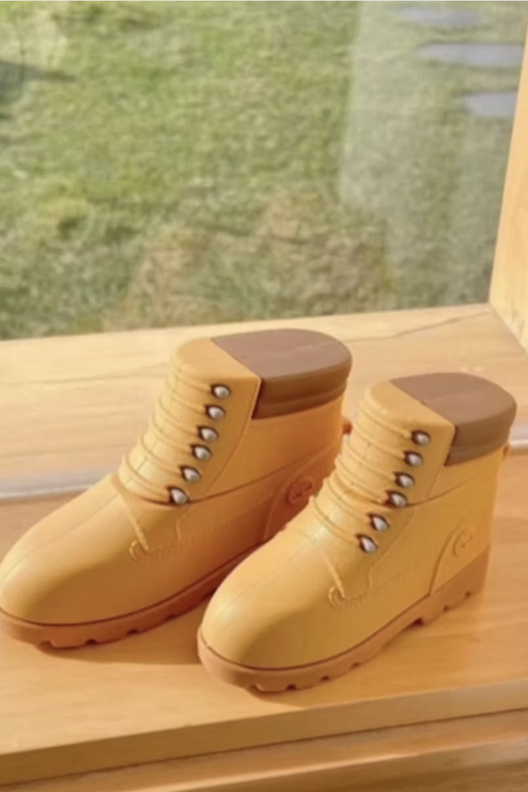
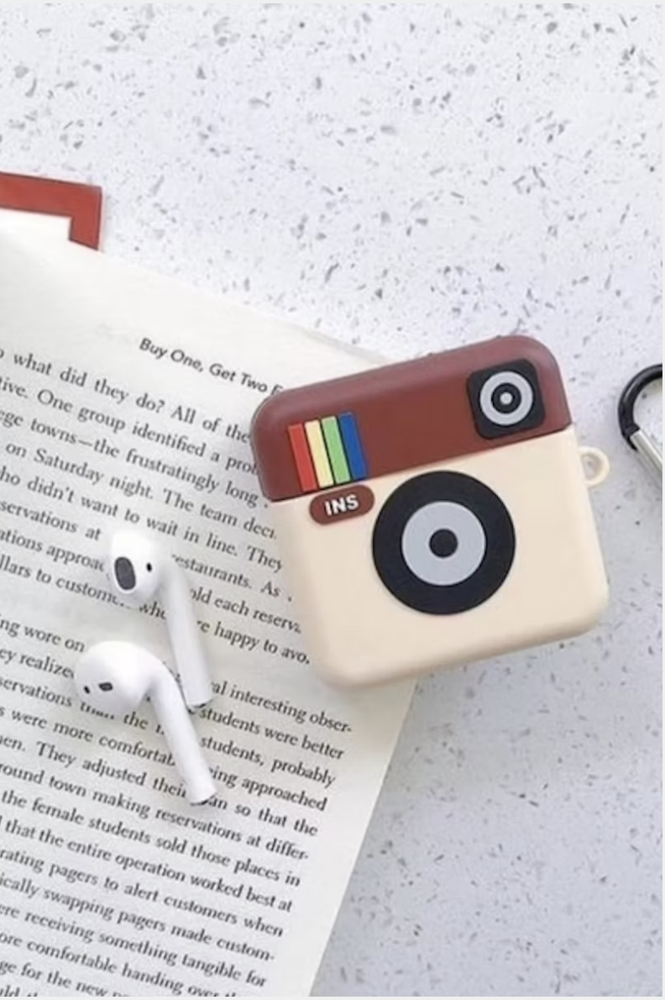
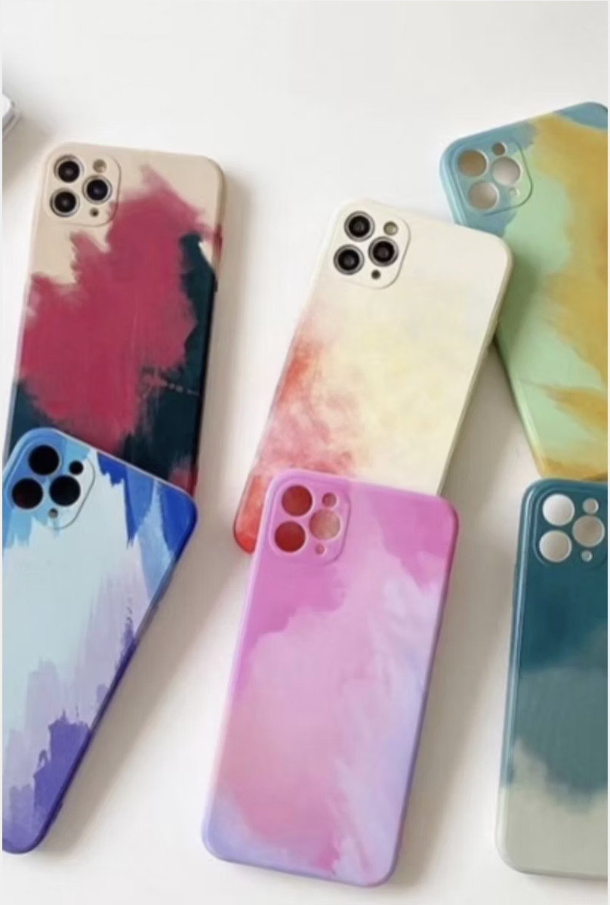
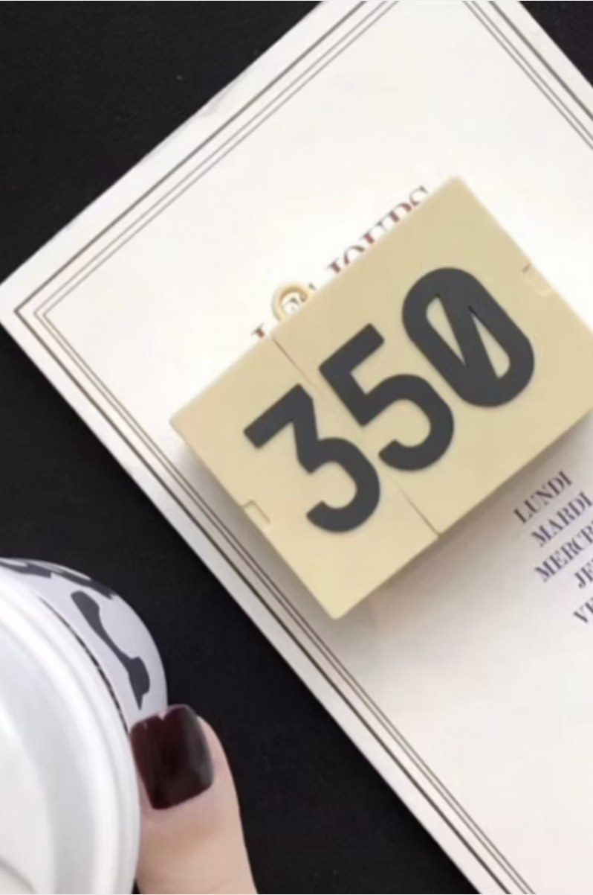
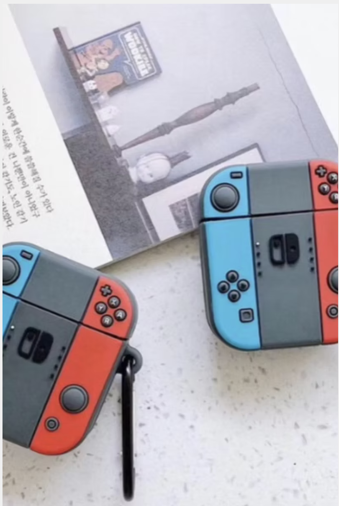
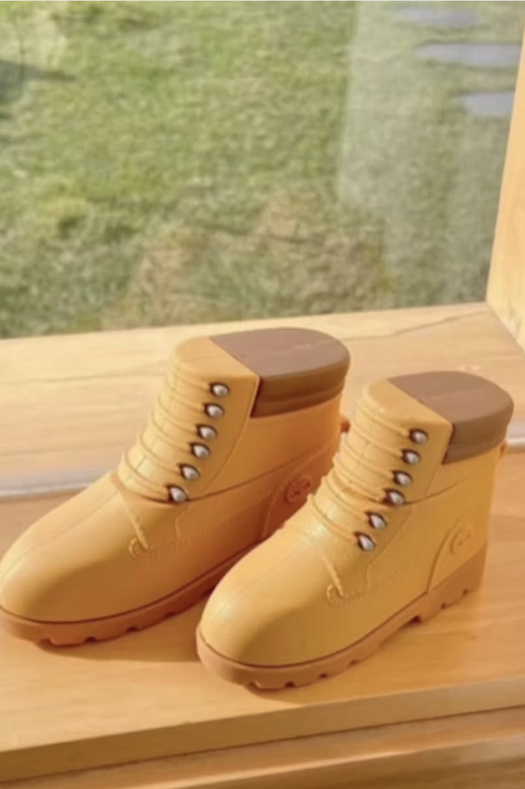
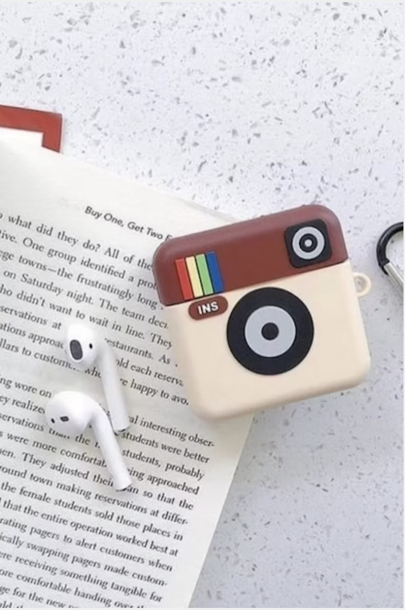
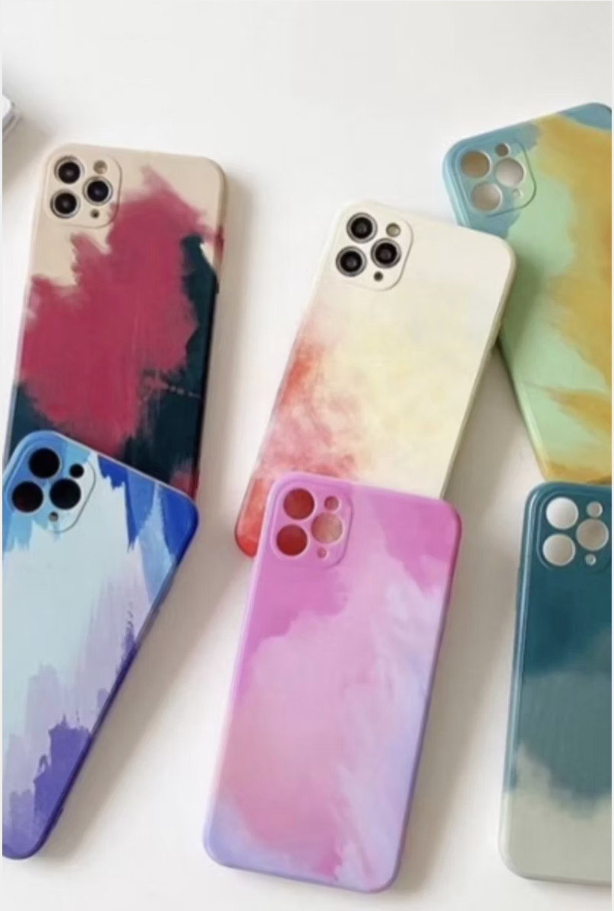
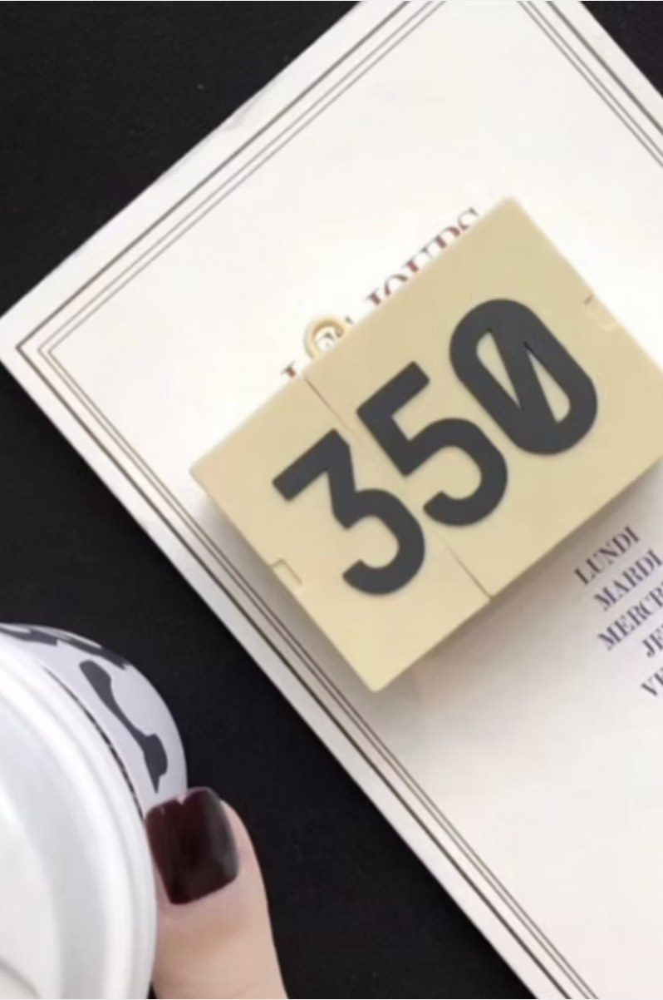
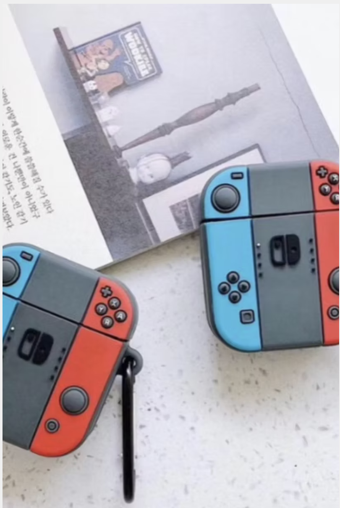

InstaPhone Accessories
A drop shipping brand I founded focused on creative, high quality phone accessories that feel fun, functional, and giftable.
Overview
InstaPhone Accessories is a company I founded to sell phone cases and accessories that stand out. I wanted the brand to feel like a blend of style and nostalgia, with products that people actually want to show off, not just basic protection.
My role
- Founded the brand and shaped the product direction and aesthetic
- Developed and executed digital marketing strategies to drive traffic and sales
- Designed website banners and product graphics to keep the store visually consistent
- Tested creative ideas and product positioning based on what people engaged with
How I approached it
I treated this like a real product and marketing sandbox. I focused on two things. First, making the brand feel recognizable and consistent. Second, making each product feel like it has a story, so it is easier to market and easier for customers to connect with.
Outcome
- Built a brand identity and product direction from the ground up
- Strengthened hands-on skills in digital marketing, creative execution, and e-commerce workflow
- Learned how to turn product ideas into visuals and messaging that feel clickable and shareable
Product themes
A few examples of the product style I leaned into. playful tech nostalgia, clean photography, and designs people would actually want to carry.
Project snapshots
A look at different screens and visual directions from the project.
 








